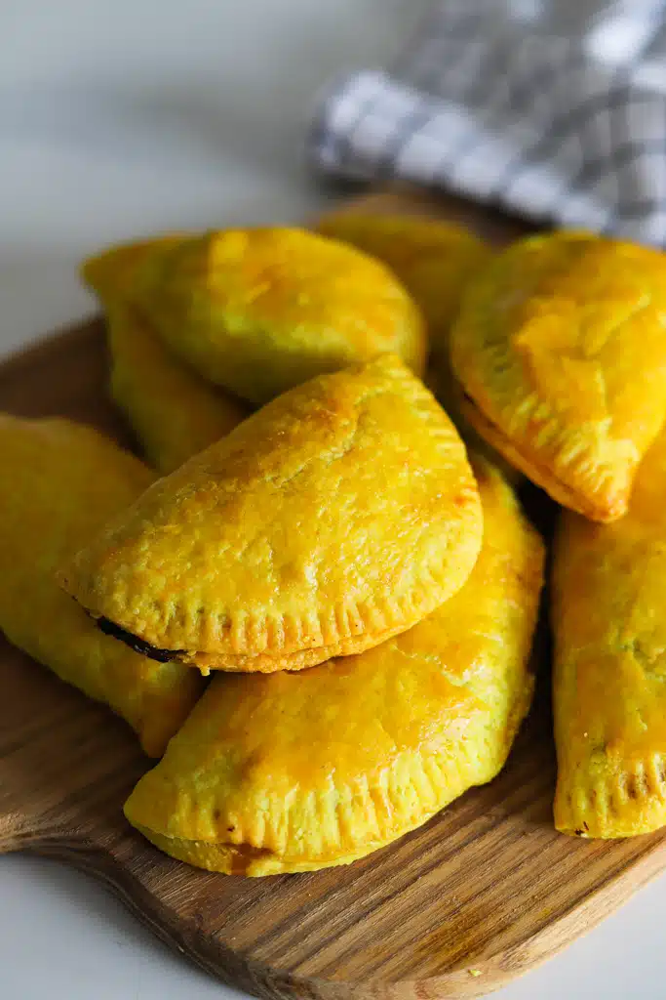

Jamaican Beef Patty

Description
Starring its golden crispy crust accompanied by the angelic taste of its core ground beef mixture, the Jamaican
Beef Patty is an icon when its comes to Jamaican street food and a must try for pastry and meat lovers alike.
However, the sensations dont stop there. Coming in many different variations there more options for those that
enjoy different kinds of meats. This recipe will be one showcasing how you can create your own Jamaican Beef
Patties from scratch.
Ingredients
Ground Beef Filling
- Ground Beef
- Thyme
- Yellow Onion
- Escallion (Green Onion)
- Scotch Bonnet Pepper
- Plain Breadcrumbs
- Seasoning
- Salt
- Black Pepper
- Paprika
- Ground allspice
- Water
- Garlic
- Ketchup
- Browning
- Beef Bouillon
- Salted butter
- Hosinsauce
- Olive oil
Crust
- All Purpose Flour
- Salt
- Sugar
- Salt
- Turmeric Powder
- Cold shortening
- Cold butter
- Egg wash
- Ice cold water
Steps
Ground Beef Filling
- Add a tablespoon of olive oil to a large skillet that is over medium to high heat, breaking up the ground beef until there arent any noticably larger pieces and the meat is browned.
- Clear room in the center of the pan and in that space add onions, garlic, thyme and escallion. Saute, then mix it in with the beef.
- Pour two cups of water into the meat mixture then season it with salt, black pepper, beef bouillon, allspice, paprika, and scotch bonnet pepper then mix. After add ketchup, browning and hoisin sauce.
- Once the meat mixture is boiling lower the heat and let it simmer until the liquid has been transformed into a thick sauce. Then proceed to add in breadcrumbs stirring it in util is evenly dispearsed throughout the mixture.
Crust
- Combine flour, salt, sugar, and tumeric powder into a large bowl and mix evenly.
- Take the shortening and butter, cut them both into small pieces and dump them into the flour. Then knead the fat and flour until it turns into a crumbly dough mixture (keep the dough cool if needed place in the fridge).
- And small amounts of ice cold water to the dough to better fuse the ingridents until it takes typical dough form. Then cover in plastic wrap and refridgerate for 45 minutes.
- Once chilled take the dough out the fridge and roll it out to approximately quarter inch thickness
- Use a bowl, cup or whatever suits your sizing preference as a stencil to cut out round pieces of the flattened dough.
-
- Add two or three tablespoons of the meat filling to the center of each cutout, leaving about a half-inch space between the meat and the border of the crust.
- Take each patty to be and fold one end of the crust over the meat and seal it by crimping it with a fork.
- Place each patty on a baking sheet and and brush them with egg wash and then proceed to bake them for 30-35 minutes (Youll be able to tell they are finished when the the crust becomes golden with a little browning)
- Allow to cool for 10-15 minutes then enjoy!